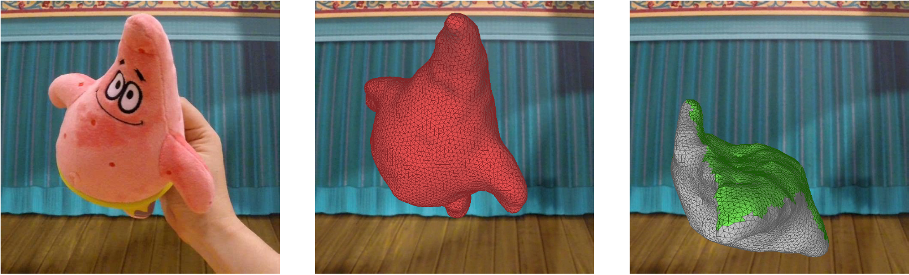
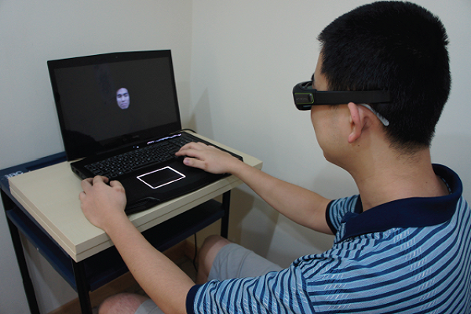
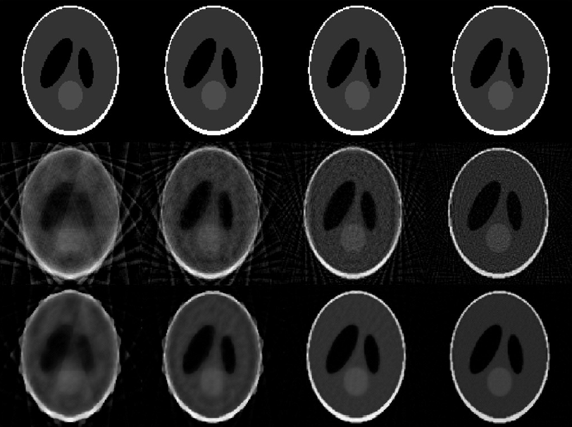
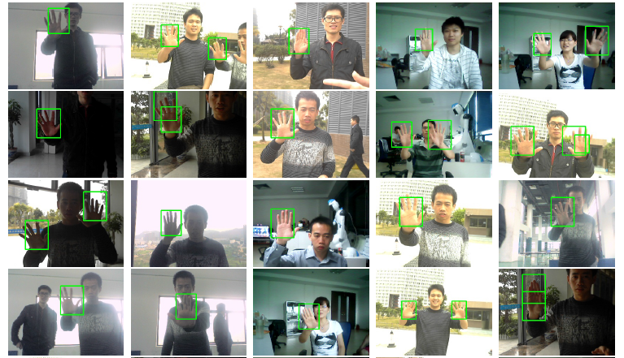
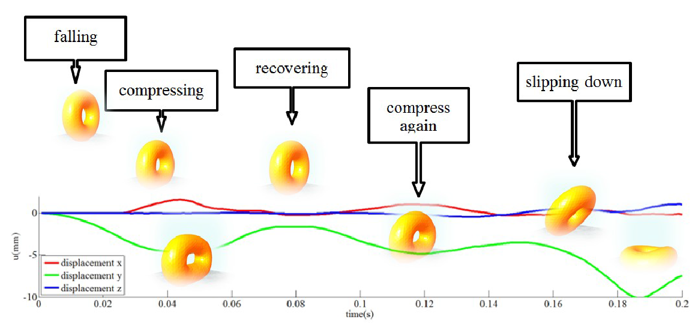
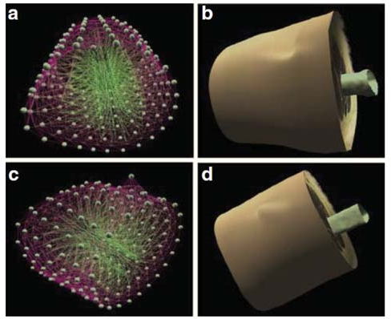
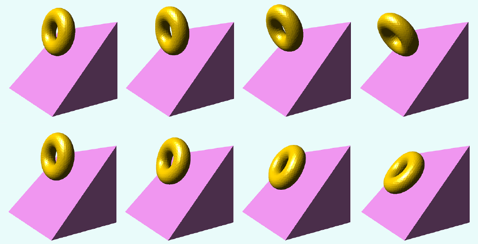
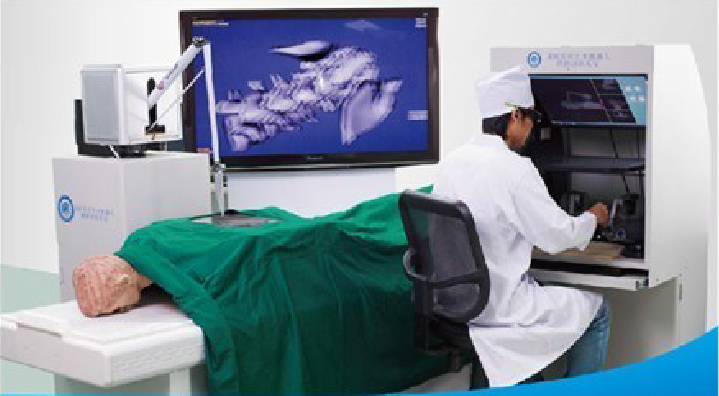

************************************ Publication ***************************************
Come to my bowl...
************************* Previous publication (before Ph.D) ****************************
PHYSICALLY BASED VIDEO EDITING Jean-Charles Bazin, Claudia Pluss, Yu Guo, Tobias Martin, Alec Jacobson, Markus Gross CGF (Present on PG), 2016 [Paper]

HOLISTIC AND FEATURAL PROCESSING FOR 2D AND 3D FACE RECOGNITION Derric Eng, Belle Yick, Yu Guo, Hong Xu, Miriam Reiner, TJ Cham, SH Chen APCV, Singapore, July 10-12, 2015 [Poster] ]
We present an experiment to indicate that 3D faces would be recognised with shorter reaction time (RT) and greater accuracy than 2D faces during holistic and featural processing.

GPU ACCELERATED CBCT RECONSTRUCTION FROM FEW VIEWS WITH SART AND TV REGULARIZATION Ping Liu, Lin Shi, Defeng Wang, Yu Guo, Jianying Li, Jing Qin, Pheng-Ann Heng HPC-MICCAI, Nagoya, Japan, Sep.22-26, 2013 [Paper]
We implemented an GPU-based algorithm by combining simultaneous algebraic reconstruction technique (SART) and total variation (TV) regularization for the CBCT reconstruction from few views.

REAL-TIME HAND DETECTION BASED ON MULTI-STAGE HOG-SVM CLASSIFIER Jiang Guo, Jun Cheng, Jianxin Pang, Yu Guo ICIP, Melbourne, Australia, Sep.15-18, 2013 [Paper]
We proposed a real-time hand detection method multi-stage classifier which combines several SVM classifies, each of which is trained to distinguish corresponding divisions of background and target.

A GPU-ACCELERATED FINITE ELEMENT SOLVER FOR SIMULATION OF SOFT-BODY DEFORMATION Yu Guo, Jianying Li, Ping Liu, Qiong Wang, Jing Qin ICIA, Yinchuan, China, Aug.26-28, 2013 [Paper]
We presented a simulation method of soft body deformation with GPU implementation, which based on Delaunay Tetrahedralizition, Finite Element Method with friction-based collisional model.

A SURVEY ON SIMULATION OF SOFT TISSUE DEFORMATION IN VIRTUAL SURGERY (in Chinese) Yu Guo, Jing Qin Journal of Integration Technology, Vol.2, No.2, Mar. 2013 [Paper]
This paper presents a comprehensive survey on simulation of soft tissue deformation in virtual surgery. Including geometrically-based methods and physically-based methods, mesh-based model and meshless model.

FALL OVER OR SLIDING DOWN? Yu Guo. SIGGRAPH Asia, Poster, Singapore, Nov.28-Dec.1, 2012 [Paper] [Poster]
We presented a contact model depending on constraints coupled with frictions which is called portable frictional contact model.

A Master-Slave Robotic Simulator Based on GPUDirect Jianying Li, Yu Guo, Heye Zhang, Yongming Xie IROS, Vilamoura, Algarve, Portugal, Oct.7-12, 2012 [Paper]
We presented a master-slave robotic simulator by using GPUDirect with InfiniBand card to speed up data transmission.
GPU-based Soft Body Deformation with Nonlinear Finite Element Method Yu Guo June, 2013
[Paper (In Chinese)] [Slides (In Chinese)]
Forces Distribution with Fractal Theory in High Velocity Compaction Technology Yu Guo June, 2010
[Paper (In Chinese)] [Slides (In Chinese)]